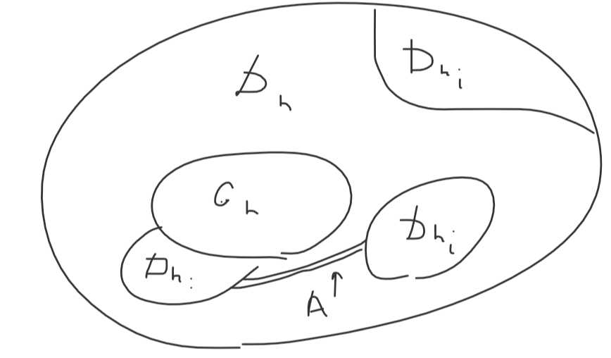

Теорема: \(G \subset \mathbf{R}^n\) – открытая, связная область. (для \(n \geqslant 2\)). Если \(\exists \displaystyle\underbrace{\int\ldots\int}_{G}f(\mathbf{x})d\mathbf{x}\), то \(\exists \displaystyle\underbrace{\int\ldots\int}_{G}|f|(\mathbf{x})d\mathbf{x}\).
Доказательство:
Предположим, что \(\not \exists \displaystyle\underbrace{\int\ldots\int}_{G}|f|(\mathbf{x})d\mathbf{x}\), то есть для любого исчерпания \(\{G_n\} \,\,\,\, \displaystyle\underbrace{\int\ldots\int}_{G_n}|f|(\mathbf{x})d\mathbf{x} \to \infty, \,\,\,\, n \to \infty\) (так как модуль неотрицателен).
Пусть \(G_n\), таково, что \(\displaystyle\underbrace{\int\ldots\int}_{G_{n + 1}}|f|(\mathbf{x})d\mathbf{x} \geqslant 3\displaystyle\underbrace{\int\ldots\int}_{G_n}|f|(\mathbf{x})d\mathbf{x} + 2n + 4\) (такое исчерпание есть, так как стремится к бесконечности (выкидываем все неподходящие \(G_n\), то есть выбираем подходящую подпоследовательность из какого-то исчерпания, которая также является исчерпанием)).
\(D_n = G_{n + 1}\setminus G_n\).
\(\displaystyle\underbrace{\int\ldots\int}_{\operatorname{Cl}D_n}|f|(\mathbf{x})d\mathbf{x} \geqslant 2 \displaystyle\underbrace{\int\ldots\int}_{G_n}|f|(\mathbf{x})d\mathbf{x} + 2n + 4\)
Рассмотрим \(f_{+}\) и \(f_{-}\). Один из двух интегралов \(\displaystyle\underbrace{\int\ldots\int}_{D_n}f_{+}(\mathbf{x})d\mathbf{x}\) и \(\displaystyle\underbrace{\int\ldots\int}_{D_n}f_{-}(\mathbf{x})d\mathbf{x}\) больше либо равен другого.
\(\displaystyle\underbrace{\int\ldots\int}_{\operatorname{Cl}D_n}f_{+}(\mathbf{x})d\mathbf{x} \geqslant \displaystyle\underbrace{\int\ldots\int}_{G_n}|f|(\mathbf{x})d\mathbf{x} + n + 2\)
\(\exists \{D_{n_i}\}\), такое, что \(\displaystyle\underbrace{\int\ldots\int}_{D_{n_i}}f_{+}(\mathbf{x})d\mathbf{x} - s_{f_{+}}(\cup D_{n_i}) \leqslant 1\) и \(m_i = \inf_{D_{n_i}}f_{+}\) и пусть \(I = \{i: \,\,\,\, m_i > 0\}\).
\(\displaystyle\underbrace{\int\ldots\int}_{\cup_{i \in I}D_{n_i}}f(\mathbf{x})d\mathbf{x}\) (на этом множестве \(f_{+}\equiv f\)) \(\geqslant \displaystyle\underbrace{\int\ldots\int}_{G_n}|f|(\mathbf{x})d\mathbf{x} + n + 1 (*)\).
Заметим, что \(\displaystyle\underbrace{\int\ldots\int}_{G_n}f(\mathbf{x})d\mathbf{x} \geqslant -\displaystyle\underbrace{\int\ldots\int}_{G_n}|f|(\mathbf{x})d\mathbf{x}\)
Складываем со \((*)\) и получаем:
\(\displaystyle\underbrace{\int\ldots\int}_{G_n \cup \left(\cup_{i \in I}D_{n_i}\right)}f(\mathbf{x})d\mathbf{x} \geqslant n + 1\)
Если \(\displaystyle\underbrace{\int\ldots\int}_{D_n}f_{+}(\mathbf{x})d\mathbf{x} \leqslant \displaystyle\underbrace{\int\ldots\int}_{D_n}f_{-}(\mathbf{x})d\mathbf{x}\), то, аналогично рассуждая, получим
\(\displaystyle\underbrace{\int\ldots\int}_{G_n \cup \left(\cup_{i \in I}D_{n_i}\right)}f(\mathbf{x})d\mathbf{x} \leqslant -n - 1\)
\(\left|\displaystyle\underbrace{\int\ldots\int}_{G_n \cup \left(\cup_{i \in I}D_{n_i}\right)}f(\mathbf{x})d\mathbf{x}\right| \geqslant n + 1\)
Это: \(G_n \cup \left(\cup_{i \in I}D_{n_i}\right)\) не исчерпание (не хватает как минимум связности). Пусть \(A_n\) таково, что \(\mu(A_n) \leqslant \frac1{\sup_{D_n}|f|}, \,\,\,\, A_n \subset D_n\) и \(G_n \cup \left(\cup_{i \in I}D_{n_i}\right) \cup A_n = \Omega_n\) связно.

В силу выбора \(A_n \,\,\,\, \left|\displaystyle\underbrace{\int\ldots\int}_{\Omega_n}f(\mathbf{x})d\mathbf{x}\right| \geqslant n\)
Исчерпанием является \(\Omega_{2n}\), так как в таком случае замыкания лежат строго внутри следующего множества. Следовательно, на этом исчерпании сама функция не имеет предела, поэтому противоречие \(\,\,\,\,\blacksquare\)
Двойной интеграл никому не нужен. Чаще всего интеграл сразу повторный.
Далее кривые гладкие.
Определение: (Кривая – это образ, а параметризации – это параметризации)
Пусть \(\mathcal{T} = \{t_i\}_{i = 1}^n\) – разбиение отрезка \([a, b]\). Тогда разбиение кривой \(\gamma: [a, b] \to \mathbf{R}^N\) – это \(\{\{\gamma(t_i)\}, \{\gamma(t_{i + 1})\}\}_{i = 0}^{n - 1}\). Обозначается: \(\gamma(\mathcal{T})\). Кусок кривой от \(\gamma(t_i)\) до \(\gamma(t_{i + 1})\) – это \(\gamma_i\). Диаметр разбиения кривой – это \(\max\{\Delta \gamma_i\}\), где \(\Delta \gamma_i\) – длина \(\gamma_i\).
Пусть \(\mathbf{R}^n \ni \xi \in \gamma_i\). Тогда разбиение называется размеченным, а \(\xi = \{\xi_i\}_{i = 1}^n\) – разметка (\(n\) – количество точек в разбиении, а не размернось \(\mathbf{R}\)).
Определение: Пусть \(f(\mathbf{x}) = f(x_1, \ldots, x_n)\) определена на точках кривой \(\gamma: [a, b] \to \mathbf{R}^n\). Пусть \(\xi_i \in \gamma_i\). Если \(\exists I: \,\,\,\, \forall \varepsilon > 0 \,\,\,\, \exists \delta > 0: \,\,\,\, \forall \mathcal{T}(\operatorname{d}\mathcal{T} < \delta) \,\,\,\, \left|\displaystyle \sum_{i = 1}f(\xi_i)\Delta \gamma_i - I\right| < \varepsilon\), то \(\displaystyle\int\limits_{\gamma} fds = I\) – криволинейный интеграл первого рода.
Определение: Пусть \(\mathbf{f} = \{f_j(\mathbf{x})\}_{i = 1}^n = \{f_j(x_1, \ldots, x_n)\}_{i = 1}^n\) определена на точках кривой \(\gamma: [a, b] \to \mathbf{R}^n\). Пусть \(\xi_i \in \gamma_i\). Если \(\exists I: \,\,\,\, \forall \varepsilon > 0 \,\,\,\, \exists \delta > 0: \,\,\,\, \forall \mathcal{T}(\operatorname{d}\mathcal{T} < \delta) \,\,\,\, \left|\displaystyle \sum_{j = 1}^{n}\displaystyle \sum_{i = 1}^N f_j(\xi_i)\Delta x_{ji} - I\right| < \varepsilon\) (\(\Delta x_{ji} = \gamma\) – разность \(j\) координат точек \(\gamma(t_i)\) и \(\gamma(t_{i + 1})\), \(N\) – количество точек в разбиении), то \(\displaystyle\int\limits_{\gamma} f_1dx_1 + f_2dx_2 + \ldots + f_ndx_n\) – криволинейный интеграл второго рода.
Классический интеграл Римана – это криволинейный интеграл второго рода.
Утверждение: Интеграл первого рода не зависит от обхода \(\gamma\), интеграл второго рода меняет знак на противоположный при изменении направления.
Доказательство: \(\,\,\,\,\blacksquare\)
Утверждение: Если \(\varphi: [a, b] \to \gamma, \,\,\,\, \varphi \in C^1[a, b]\), то
\(\displaystyle\int\limits_{\gamma} fds = \displaystyle\int\limits_a^b f(\gamma(t))\sqrt{\displaystyle \sum_{i = 1}^{n}(x_i')^2(t)}dt\)
\(\displaystyle\int\limits_{\gamma} f_1dx_1 + f_2dx_2 + \ldots + f_ndx_n = \displaystyle\int\limits_a^b\displaystyle \sum_{i = 1}^{n}f_i(\gamma(t))x_i'(t)dt\)
Доказательство: \(\,\,\,\,\blacksquare\)